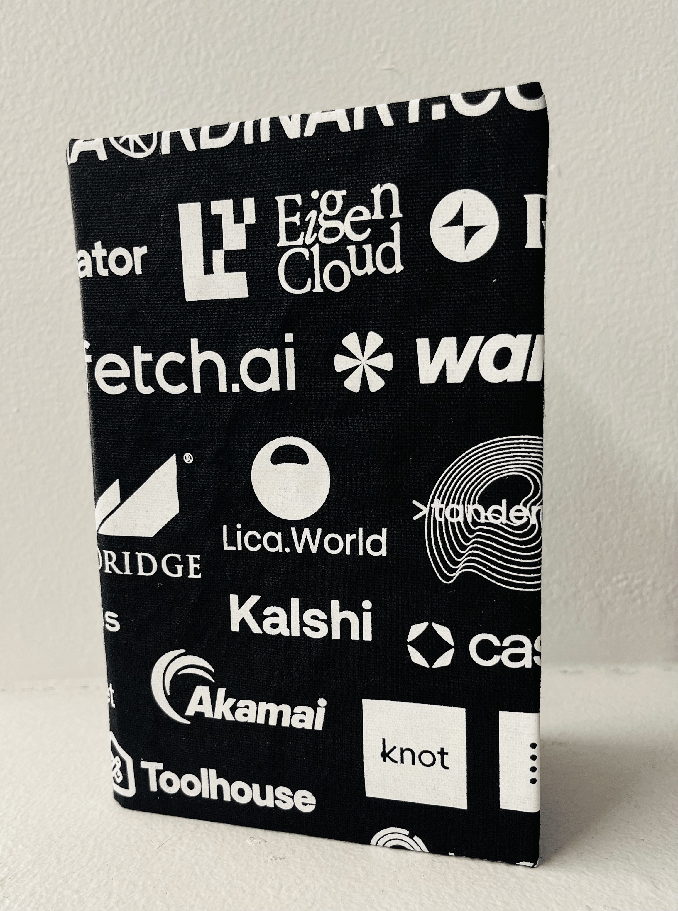
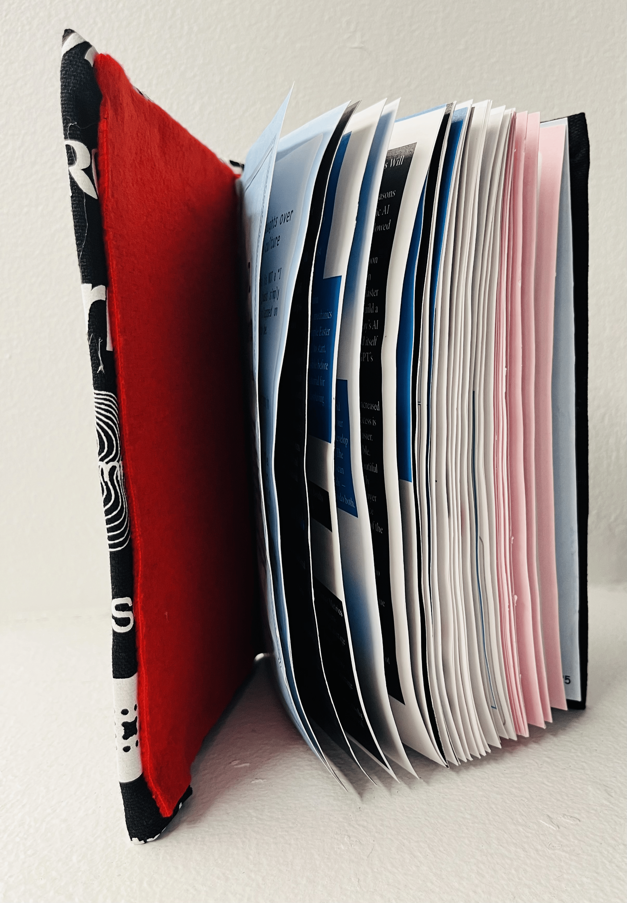
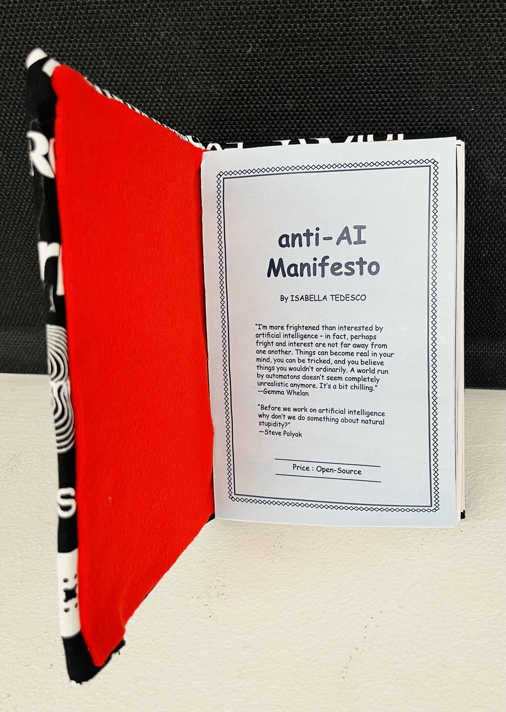
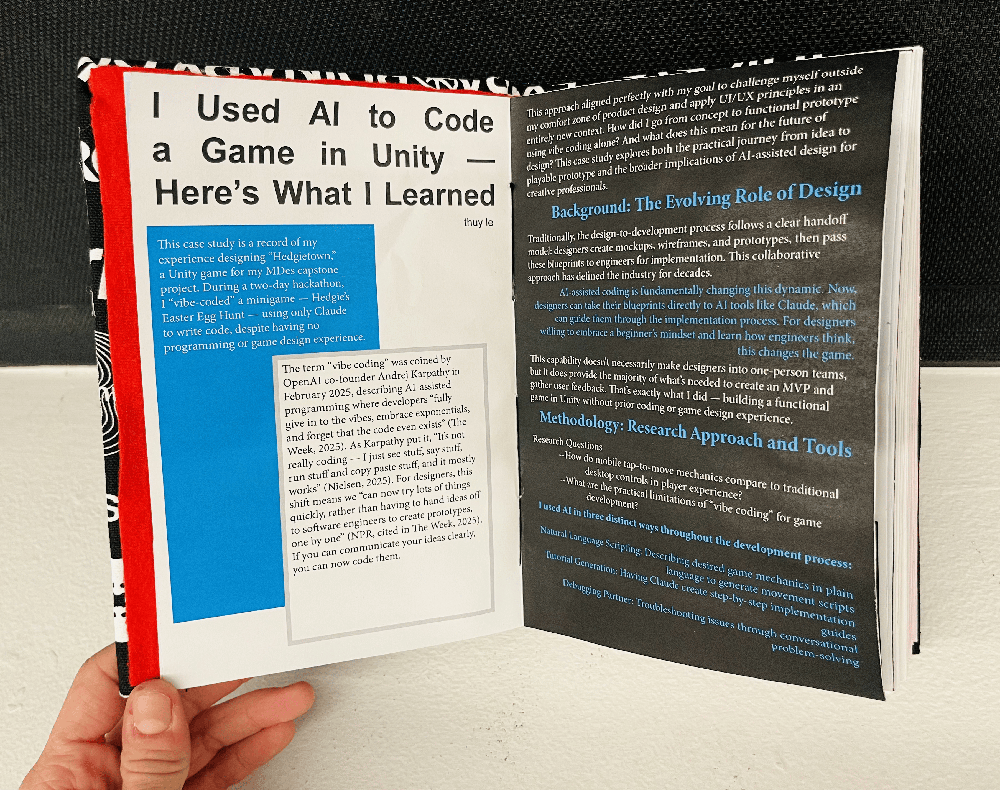
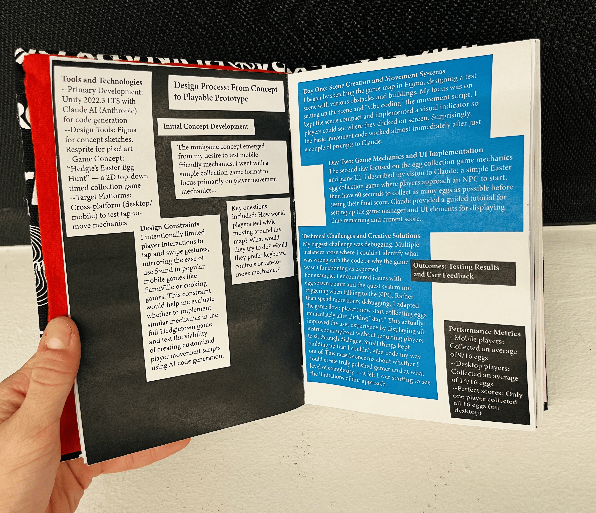
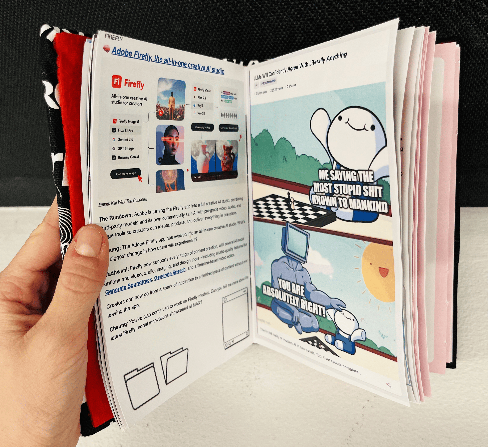
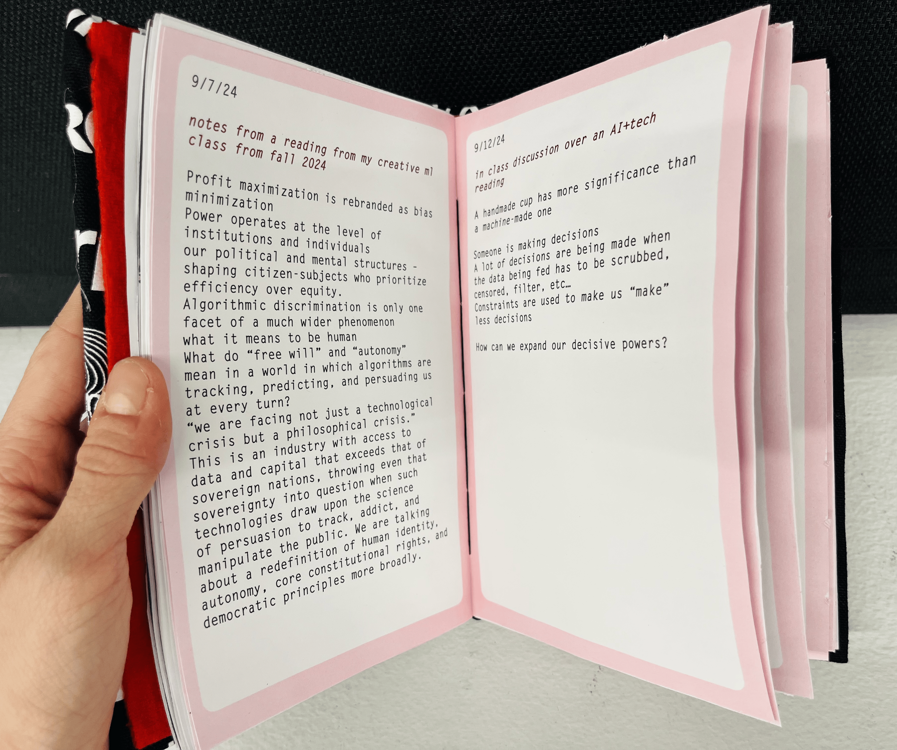
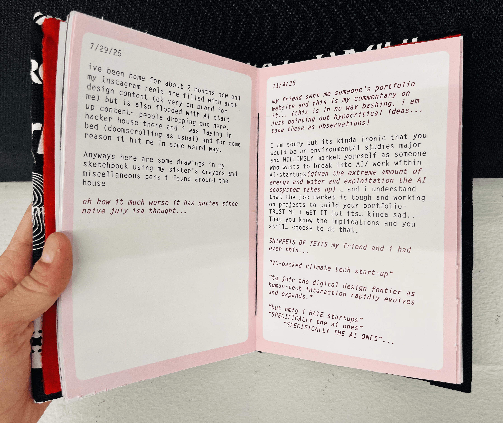

Book Design — Artist's Book
anti-ai manifesto
A hand-bound artist's book serving as critical commentary on AI and startup culture — compiled from collected articles, visual ephemera, and personal reflections, and bound by hand as a deliberate act of resistance against efficiency-obsessed automation.
This artist's book is a critical commentary on the pervasive nature of AI and startup culture. It's structured in three sections: collected articles about AI developments, visual ephemera from and about the tech world — social media posts, Reddit threads, screenshots — and personal reflections and notes on this cultural phenomenon.
The cover is constructed from a hackathon "swag" bag featuring various AI startup logos, immediately signaling the work's satirical intent. Initially, I wanted to conceive the book as a mass-produced object, mirroring the "move fast" ethos of tech culture. That changed after a weekend I spent at home and in San Francisco — interacting with people in this space revealed a troubling disconnect from craft and intentional making. One conversation stuck with me: someone watched me drawing assets by hand and said, "I am surprised they haven't AI-automated that process yet."
Design Approach
The whimsical and satirical aesthetic underscores the critique, positioning slow, material craft against the relentless push toward algorithmic production. The book is hand-bound, which makes the act of making it inseparable from its argument: what do we lose when everything becomes optimized, automated, and stripped of human touch?
Content & Curation
Through its form and content, the book questions the value of labor and meaning in an AI-saturated world. The three-section structure moves from the external — industry articles and media — to the internal: personal notes and reflections that resist the clean, scalable logic the tech world applies to everything, including creativity itself.
Book Photography







